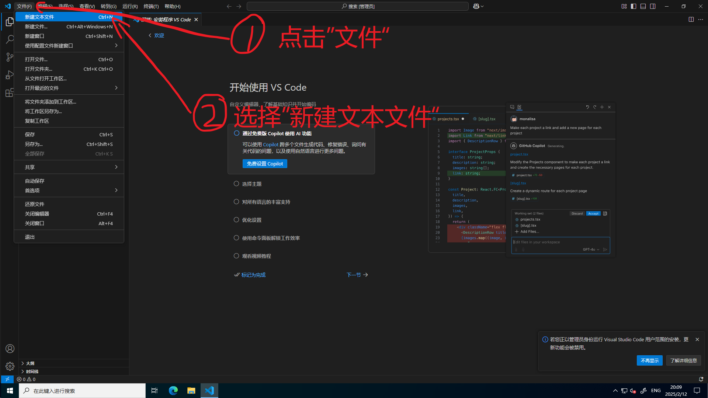
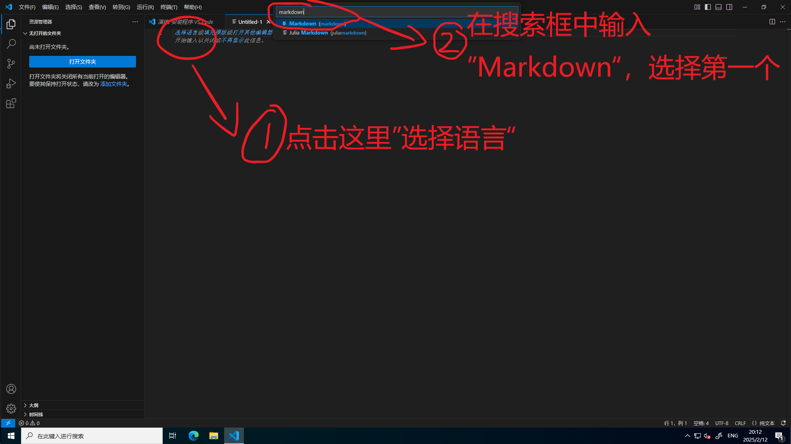
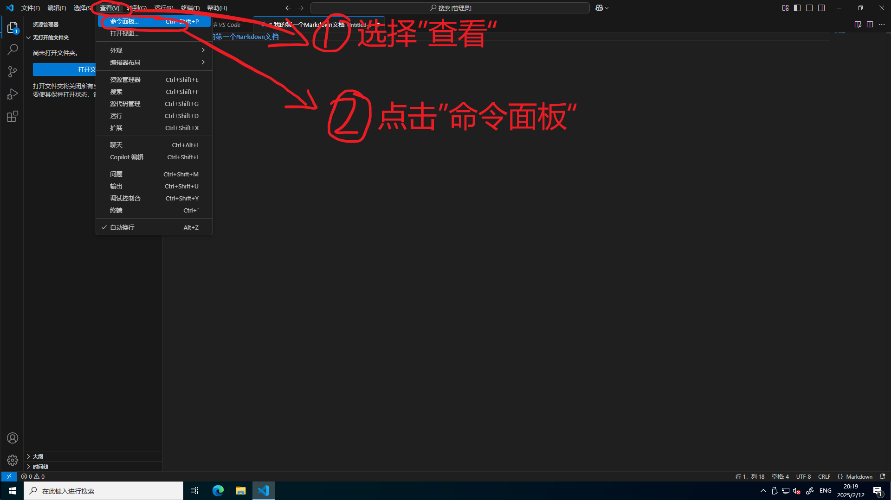
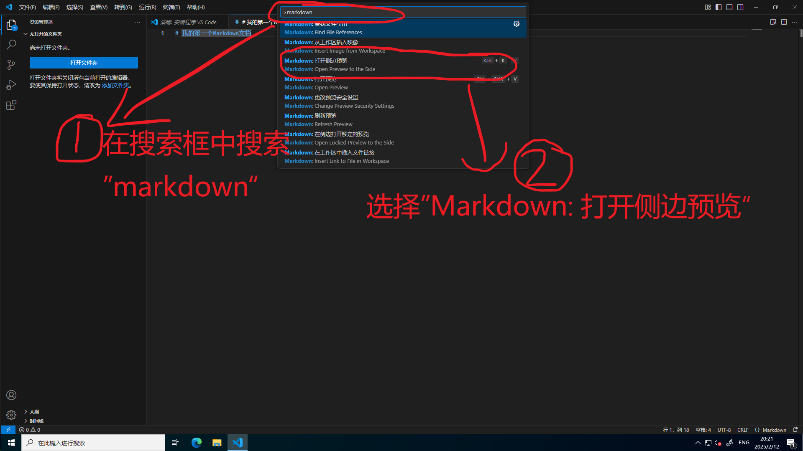
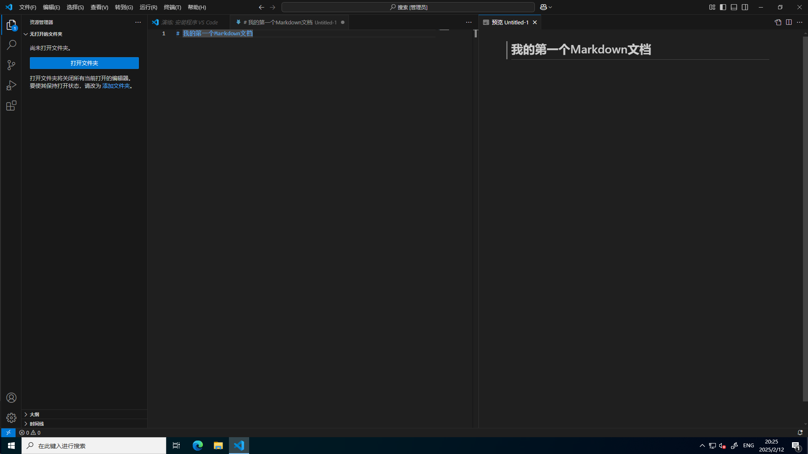

白痴都能学会的Markdown教程
前言
Markdown真的超级简单！耐心看下去，这篇教程一定会对你有好处的！
VSCode显示Markdown侧边预览
首先打开我们之前下载好的工具VSCode。如果你按照教程正确配置好了，那应该是没问题了。

按照如上图步骤操作。

继续，如图上步骤操作。现在你应该得到了一个Markdown文档，可以开始正式编写了。
在文档第一行中输入以下内容：
# 我的第一个Markdown文档
那么，该如何查看输出的结果呢？别着急，跟着教程走。  跟着图上的步骤走，然后：  这个时候，你就会惊奇地发现，你可以在本地预览Markdown格式了（如下图）！可喜可贺！ 
标题
在Markdown中，#+空格+一行文字表示标题。一个#是最大的，我们称之为一级标题。相应地，##是二级标题，如此类推，一直到六个#，一共有六级标题，他们的层级关系逐级递减，字号越来越小。
在格内茨百科的编纂当中，我们一般只需要用到一级标题(#，用于页面最上方，作为页面主标题)和三级标题(###，作为页面下属子标题)
示例代码：
这是一个一级标题。
# 这是一个一级标题。
这是一个三级标题。
### 这是一个三级标题。
注意：井号和标题文字之间一定要加空格！
换行
在Markdown中，换行不再只是直接按Enter了事。你需要在每行的末尾加上两个空格，然后再按Enter。
欸？或许你已经发现了。无论你按再多的空格和Enter，两个有文字之间的行最多只会空一行。这个时候，就轮到我们的html标签上场了。Markdown和html可以互相转换，html也可以嵌入到Markdown之中。只需要用上html中的换行标签<br>，在按下Enter即可了事。一个Enter最多能隔开一行，一个<br>标签也能隔开一行。所以，如果你想隔开5行的话，可以加上4行<br>标签。
这两行文字之间
隔了足足有五行。
源码如下：
这两行文字之间
<br>
<br>
<br>
<br>
隔了足足有五行。
为了保持工整，我们一般会在<br>标签的上下都空上一行。这一般不会影响最终的显示结果。
强调，斜体，删除线
在markdown中，**一段文本**可以给文本加粗。
示范文本。
而*一段文本*可以让一段文本斜体显示。
示范文本。
那你问删除线怎么办？不好意思，markdown没这个功能。我们跳过不讲。
咳咳，这个时候就轮到我们的老朋友登场了，html标签。<del>一段文本</del>可以让一段文本被划掉。
示范文本
有序列表和无序列表
无序列表用- 第一项：来表示（记得开一行新的。）换行后的内容会缩进到列表之后，所以还要空一行。
- 示范第一项：
示范内容。
这就不会被缩到示范项后面。因为多空了一行。
源代码：
- 示范第一项：
示范内容。
这就不会被缩到示范项后面。因为多空了一行。
有序列表也是一样的，只不过把-换成了阿拉伯数字。
1. 示范项目
源代码：
1. 示范项目
引用链接
Markdown的引用链接如下格式：
[显示文本](指向链接)
比如，我们要创建一个显示”看看我“，指向Github官网的链接，就要这样写：
[看看我](https://github.com)
显示效果如下：
看看我
不仅如此，引用链接还可以跳转到其他文档或文件。比如我们要创建一个显示”点我“，指向创作者指南的链接，可以这样写：
[点我](../index.md)
或者
[点我](/GerneltsWiki/语言Languages/简体中文/创作者手册/index.md)
二者的效果都是一样的。前者使用了相对路径，后者使用了绝对路径。在编写格内茨百科的过程中，我们强烈推荐你使用绝对路径。(./表示当前目录下，../表示上一个目录下。以此类推，../../表示上上个目录下。)如果你没弄错的话，VSCode会自动弹出当且路径下的文件。
显示效果：
点我
点我
插入图片
插入图片与引用链接没什么不同。只是在前面多加了一个!。


效果如图：
引用
欸？看了那么长时间的教程，这篇教程的引用部分是怎么做的呢？别急，现在就教你。
只需要新开一行，然后在前面加一个>（注意带一个空格）就可以了。快去试试。
哦对了，换行的时候如果还想继续引用记得在新行继续加>。
示范文字。
引用当中还可以包含其他格式，还可以嵌套引用，比如说：
这是一个三级标题引用
- 这是一个列表
我在强调某件事。
这是一个嵌套引用。
源代码：
> ### 这是一个三级标题引用
> - 这是一个列表
>
> 我在**强调**某件事。
>> 这是一个嵌套引用。
代码块与格式消除
咳咳，想必聪明的同学已经发现一个问题了。如果我想使用类似#，*，.，()，[]这些东西在文章里面该怎么办呢？
其实很简单，只需要在前面加个\就行了。
示例：
#，*，.，()，[]
源码：
\#，\*，\.，\(\)，\[\]
欸？那么又会有聪明的小伙伴会问了，我想展示源代码，而不是被解析后的结果，那怎么办？很简单，只需要拿``把你的源代码括住就行了。
这个我就不提供示例了这B就是懒，自己去试试吧。
制表
这玩意我暂时还没有用到，而且要用html标签，有点麻烦。咕咕咕。
本教程到此完结，啪啪啪，完结撒花~
声明：本教程不是专业的Markdown教程，旨在为Markdown萌新提供基本的Markdown知识。如有错漏，欢迎勘误！
更多Markdown知识，请上搜索引擎搜索！